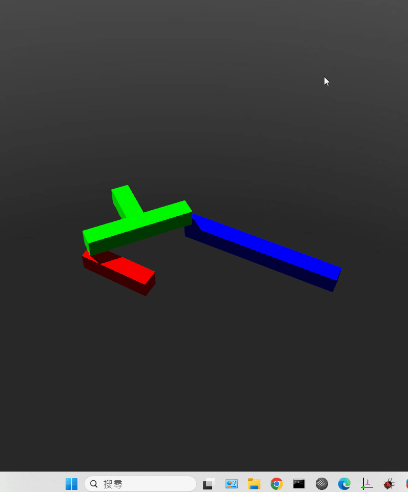

Exam <<
Previous Next >> Exam2
Exam1
Exam1 (10%): 建立 Webots 基本物件模擬場景
請直接利用 Webots 中的 box 節點建立以下四連桿機構的運動模擬:

其中紅色連桿為主動旋轉, 其旋轉速度設為 1.0 rad/s, 紅色連桿長度為 0.4m, 綠色連桿長度為 0.6m (短桿長度為 0.3m 基座位於長桿中央且與基座長桿重疊, ), 藍色連桿長度為 0.9m, 紅色連桿與藍色連桿距離則為 1m.
請學員將考試操作流程紀錄於作業網站中的 Exam1 頁面中, 並完成下列要求:
- 請詳細說明各連桿的製作流程, 利用 Solvespace 繪製當紅色連桿旋轉角度為個人學號最後兩碼時 (單位為 degree) 的線架構圖, 並將此角度作為四連桿的起始旋轉角度.
- 完成後, 請以"國立虎尾科技大學 - 機械設計工程系 - cd2025 Exam1 - 學員學號" 作為操作影片標題, 上傳至 Youtube 後在指定時段內回傳至指定表單. 並在個人作業倉儲中以 Exam1 頁面紀錄相關過程與心得.
參考答案: fourbar_box_exam1_1.7z
Exam1 相關提問:
- 製作此場景時，WorldInfo 節點有何作用？
- Viewpoint 節點的主要功能是什麼？
- TexturedBackground 與 TexturedBackgroundLight 在場景中負責什麼？
- Robot 節點在此場景中代表什麼角色？
- base Solid 節點的功能為何？
- Shape 與 Appearance 節點如何用於物件外觀設定？
- HingeJoint 節點的用途與基本參數有哪些？
- HingeJointParameters 節點中的 axis 與 anchor 分別代表什麼？
- RotationalMotor 裝置如何與 HingeJoint 結合？
- Solid 節點與 boundingObject 的關係為何？
- link1、link2、link3 各自代表什麼結構？
- Pose 節點的功能與使用時機？
- geometry Box 如何設定形狀尺寸？
- material Material 內的 diffuseColor 如何影響外觀？
- transparency 參數設定對外觀有何影響？
- endPoint 屬性在 HingeJoint 結構中的意義？
- Robot 節點中 children 陣列的作用？
- physics Physics 節點的功能？
- SolidReference 如何實現多關節結構的連結？
- controller 屬性如何指定機器人控制程式？
- DEF 與 USE 的差異與用途？
- translation 與 rotation 如何決定物件在 3D 空間的位置與朝向？
- 何謂 boundingObject？為何要指定？
- 為什麼 link2 會包含 Pose 及多個子 Shape？
- anchor 參數如何影響關節的運動中心？
- 四連桿結構在此場景的設計意圖為何？
- 如何在 Webots 檢查各關節的運動範圍？
- 若要讓 link3 可動，需在何處設定馬達？
- 場景中透明的 base 有什麼作用？
- 製作此場景時，應注意哪些結構層級與命名規則？
Exam <<
Previous Next >> Exam2